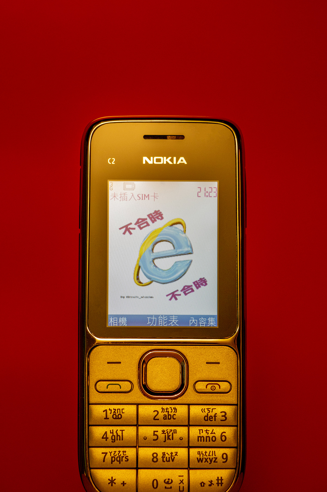
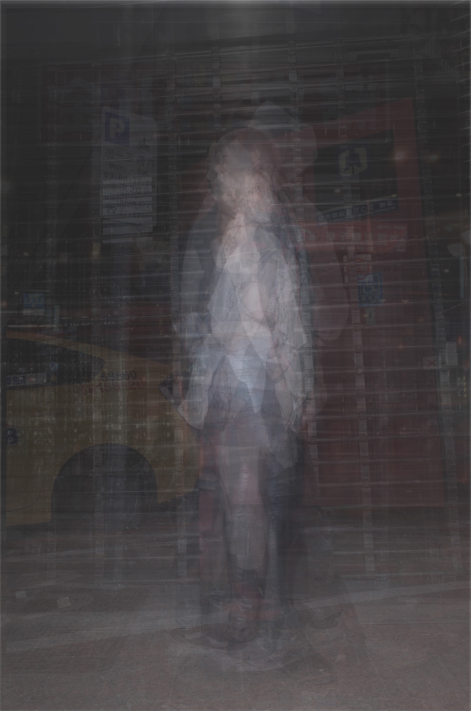
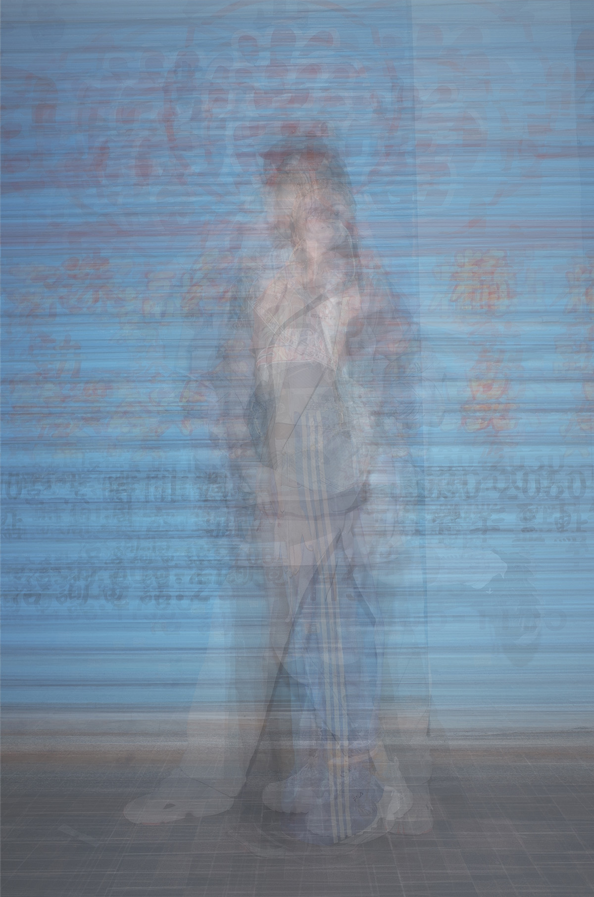
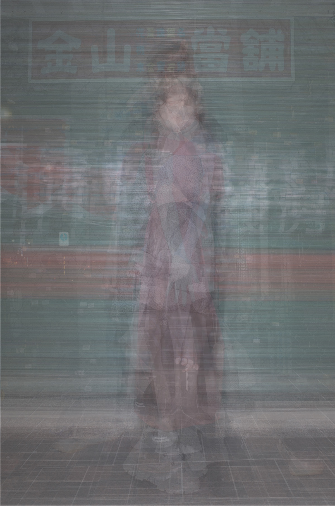
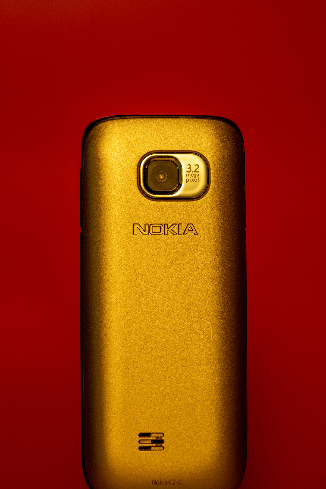

|





|
不合時e, 陳浩智 @michi_shootin 資料的保存，時間是最大的敵人，一直以來都是。膠卷會過期相紙會老化，升級電子化後，我們又換了一種方式去延續影像。不斷的擴充記憶體、持續的備份，深怕有一天它會隨著記憶消失不見。影像的產製越來越簡單，但保存的問題卻一直都在。在這麼快速的生產模式下，影像跟我們的關係有發生改變嗎？為了什麼我們要一直去製造影像呢？ 關於專題不合時e，以夜晚的衣服為出發，拍攝夜店外男女的裝扮。這次專題以快照形式呈現，從意願詢問到給對方成片時間不超過五分鐘。 照片有乘載訊息的能力，在拍攝這一百多人中，透過與他們交流後,還是得靠手機建立了連結，不管是讀卡、製造 GIF、傳送照片或是交換社交帳號，最終還是回到了以影像為主的社群軟體。有種以影像回歸影像的錯覺，但人與人的連結早在拍攝當下就停止了。 「照片的存在是為了抵抗時間,創造資訊、建立連結一直沒變。」 view on issuu view on instagram |